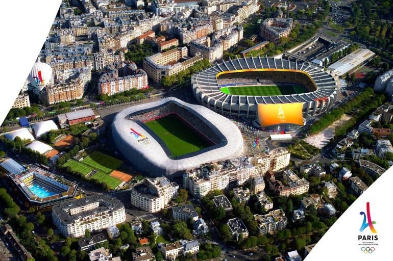

El atletismo, boxeo y ciclismo alcanzarán la plena
igualdad de género por primera vez en París 2024, lo que
significa que 28 de los 32 deportes del programa 2024 tendrán
un equilibrio de género completo. También marcará un
crecimiento en eventos mixtos en el programa, en comparación
con Tokio 2020, de 18 a 22.
La reducción en los 28 deportes, es la siguiente:
Levantamiento de pesas
Se eliminó cuatro eventos del programa. El deporte ahora
iene cinco por género, con 120 atletas, en comparación
con los 196 en Tokio. La IWF finalizará las categorías
de peso específicas en el cuarto trimestre de 2021.
Boxeo
Este deporte alcanzará la igualdad de género por primera
vez en París 2024, fomentando un programa con siete eventos
masculinos y seis femeninos con las categorías de peso
específicas que definirá el Ejecutivo del COI en el cuarto
trimestre de 2021.
Importantes modificaciones al programa olímpico de
París 2024
El Comité Ejecutivo del COI aprobó hoy el programa de
eventos, el número de atletas participantes y la igualdad
de genero para los Juegos Olímpicos París 2024, destacando
la inclusión del skateboarding, escalada deportiva, surf y
break, mientras que la marcha de 50 kilómetros desaparece y
la propuesta a World Athletics es reemplazar esta prueba con
un nuevo evento mixto.
La decisión de este lunes ayudará a que los Juegos Olímpicos
de París 2024 sean aptos para un mundo post-coronavirus,
menciona un comunicado del Comité Olímpico Internacional.
Ciuadades Olimpicas
La capital francesa organizó la segunda edición de
la era moderna de los Olímpicos en 1900 y posteriormente
lo hizo en 1924, por lo que un siglo después volverá a
recibir la llama olímpica.
Bajo el lema "Sigue al sol", la candidatura de Los
Ángeles prometió una redefinición de los Juegos
Olímpicos luego de que ya fue sede en 1932 y 1984.
"Hace solo dos años no pensábamos que nos íbamos a
encontrar con este escenario, pero sabíamos que el
objetivo de Los Ángeles era hacer lo correcto para el
movimiento olímpico. No pensábamos mover la fecha, pero
lo hemos hecho", reconoció el alcalde Garcetti.